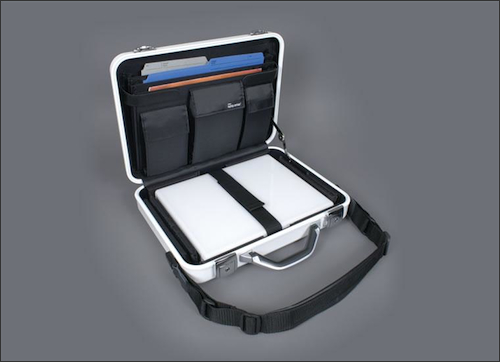
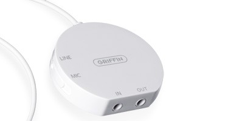
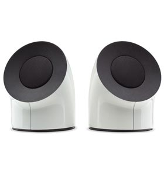
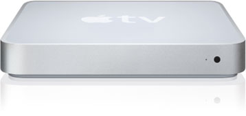

Top 10 – Maczubehör für Styler
Es gibt Dinge, die sind einfach zu schön um wahr zu sein. Viele gute Gründe, um eine Tankstelle zu überfallen..
10. Platz - LaCie USB- und Firewirehub

Das Ding ist wunderschön  Es fehlt allerdings die Möglichkeit eine Blume zu platzieren. Ausserdem ist das gute Stück recht wackelig und unpraktisch. Ich würde es aber nie wieder freiwillig von meinem Schreibtisch entfernen.
Es fehlt allerdings die Möglichkeit eine Blume zu platzieren. Ausserdem ist das gute Stück recht wackelig und unpraktisch. Ich würde es aber nie wieder freiwillig von meinem Schreibtisch entfernen.
9. Platz - Laptop Armor Aluminium Weiß

Ich hab diesen Koffer in Silber. Mein MacBook und mein iBook haben schon spektakuläre Stürze damit überstanden. (5 Meter die Treppe runter). Einfach einen schwarzen Apfel anbringen und neidische Blicke sind einem sicher!

Ein ganz wunderbares Gerät, dass ich nur jedem wärmstens ans Herz legen kann um sein Headset anzuschließen.
7. Platz - LaCie Firewire Speaker

Wenn ich mal nicht mehr mit Kopfhörern Musik hören sollte, dann wären das definitiv die Lautsprecher meiner Wahl. Auch gut, um sie nur in einem Schrein stehen zu haben und ihnen zu huldigen!
6. Platz - Die neue Apple-Tastatur (USB)
So eine tolle Tastatur habe ich noch nie gesehen. Die Apple-Taste fehlt, aber das ist egal. Ich bin mir sicher, dass man das Ding in 1000 Jahren irgendwo ausbuddeln wird und dann zu dem Schluss kommt, dass Urmenschen schon verdammt ästhetische Sachen besessen haben.
5. Platz - Griffin Powermate (Silber)

Das Teil ist wirklich vollkommen unnütz. Macht sich aber auf jedem Schreibtisch gut und sichert einem viele Fragen und verwunderte Blicke. Kann übrigens als Panikbutton im Büro benutzt werden um "private" Surfeskapaden zu verschleiern. (Anmerkung: Ich arbeite in keinem Büro)

Wirklich ein schönes, wenn auch stark verbesserungswürdiges Gerät, dass auf Platz 5 meiner persönlichen Topliste steht. (Ab jetzt kommen wir in einen Bereich von Zubehör, das ich mir nicht mehr leisten kann.)
3. Platz - Apple Cinema Display 30"

sujay thomas von Flickr (siehe Bild oben) ist echt schwer zu beneiden. Die Displays sind ziemlich teuer, sehen dafür aber auch sehr gut aus und bieten eine super Anzeigequalität. Der betuchte Apple Fan stellt sich am besten mindestens 3 davon auf.
Mit so einem Display sieht Phase-5 übrigens sehr kompakt aus…
Integriertes Zubehör in Vollendung. Ein Wacoom-Grafiktablett in Verbindung mit einem MacBook. Mein absoluter Mobilcomputertraum.

Als ich diesen unglaublichen Schreibtisch das erste mal gesehen habe wusste ich, dass ich nie glücklich sein würde bevor ich nicht einmal während mein ModBook in diesem Tisch liegt an drei 30" Cinema Displays, die an meinen 8-Kern MacPro angeschlossen sind, auf meiner neuen Apple-Tastatur tippend meinen Freunden die Vorzüge eines Griffin Powermate Gnubbels erklärt ätte.
Gut das wars. Ich bin ausgelaugt und deprimiert: Ich finde meine Schweinsmaske und die Pistole nicht mehr…


4 Kommentare zu "Top 10 – Maczubehör für Styler"
- Externe Links im selben Fenster öffnen
- Externe Links in neuem Fenster öffnen
Herschel Rubinstein
hmm...milk wäre sicher ein adäquater ersatz für meinen glastisch
Red Baron
Auf jeden Fall
Bastian
Ich hätte hier so ein Griffin PowerMate rumstehen und wollte ihn schon seit längerem bei eBay reinsetzen. Interesse?
Red Baron
Nö. Habe selbst ein Griffin Powermate Gnubel. Ist unpraktsich, sieht aber im Dunkeln gut aus!